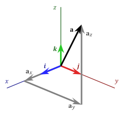
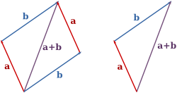
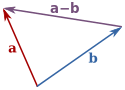
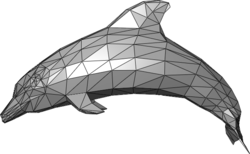
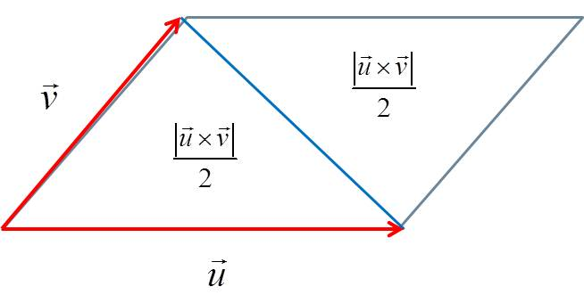
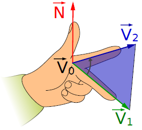

向量
定义:具有大小同时也代表方向的量. 他是几何空间概念中形成的一个抽象的概念. 我们可以用它表示一个三维空间的对象, 例如一个点.
坐标
在笛卡尔坐标系下我们使用三个坐标值代表一个向量, \\\\((x, y, z)\\\\).

在计算机中我们可以用一个有三个坐标的类表示并储存向量, 每个坐标都用双精度浮点数来表示.
在 vec3.h 中, 我定义了个类Vec3用来代表三维向量.
class Vec3 {
public:
double x;
double y;
double z;
inline Vec3(const double x, const double y, const double z) : x(x), y(y), z(z)
{
}
};
为了方便以后调试我加了下面的方法把向量打印出来
ostream& operator<<(ostream& out, const Vec3& v)
{
out << "(" << v.x << "," << v.y << "," << v.z << ")";
return out;
}
创建向量-测试
#include "vec3.h"
int main() {
auto v = Vec3(1.0, 2.0, 3.0);
std::cout << v << std::endl;
}
创建向量-输出
(1,2,3)
模(向量的大小)
在三维笛卡尔坐标系下的向量$\vec{a}=(x,y,z)$,
其模长为 $\lVert \vec{a} \rVert=\sqrt{x^2+y^2+z^2}$
模-实现
double Vec3::module2() const {
return this->x*this->x + this->y*this->y + this->z*this->z;
}
double Vec3::module() const {
return sqrt(this->module2());
}
模-测试
std::cout << "The module of " << a << " is " << a.module() << std::endl;
模-输出
The module of (1,2,3) is 3.74166
向量的基本运算
向量有两个基本运算: 向量相加和标量乘法
向量相加
两个向量$\vec{a}$和$\vec{b}$相加会得到另一个向量, 并且具有以下特点, 封闭性, 交换律, 结合律, 零向量, 加法逆元.

向量相减
两个向量$\vec{a}$和$\vec{b}$的相减可以看成是加上了一个与$\vec{b}$大小相等方向相反的向量.

$$\vec{a} + \vec{b} = (a_i + b_i)\vec{e}_i + (a_j + b_j)\vec{e}_j + (a_k + b_k)\vec{e}_k$$
返回一个向量, 它的坐标值是两个向量的各个坐标值的相加或相减
向量加减-实现
Vec3 Vec3::operator+(const Vec3& other) const {
return Vec3(this->x + other.x, this->y + other.y, this->z + other.z);
}
Vec3 Vec3::operator-(const Vec3& other) const {
return Vec3(this->x - other.x, this->y - other.y, this->z - other.z);
}
向量加减-测试
auto a = Vec3(1.0, 2.0, 3.0);
auto b = Vec3(1.0, 3.0, 5.0);
std::cout << a << "+" << b << "=" << a + b << std::endl;
std::cout << a << "-" << b << "=" << a - b << std::endl;
向量加减-输出
(1,2,3)+(1,3,5)=(2,5,8)
(1,2,3)-(1,3,5)=(0,-1,-2)
标量乘法
$k\vec{v}$, 运算结果是对一个向量的拉伸, 如果k是负数得出的结果会是与$\vec{v}$方向相反
标量乘法-实现
Vec3 Vec3::operator*(double scalar) const {
return Vec3(this->x * scalar, this->y * scalar, this->z * scalar);
}
Vec3 operator*(double scalar, const Vec3 & vector) {
return Vec3(vector.x * scalar, vector.y * scalar, vector.z * scalar);
}
标量乘法-测试
std::cout << a << " per 3 is " << a * 3 << std::endl;
std::cout << "3 per " << a << " is " << 3 * a << std::endl;
标量乘法-输出
(1,2,3) per 3 is (3,6,9)
3 per (1,2,3) is (3,6,9)
零向量
始点与终点重合, 大小为零的向量$\vec{0}$
零向量-定义
const Vec3 ZERO_VECTOR = Vec3(0, 0, 0);
反向量
一个向量$\vec{v} (a, b, c)$的反向量$-\vec{v} (-a, -b, -c)$与它大小相等但方向相反.
反向量-实现
Vec3 Vec3::operator-() const {
return Vec3(-this->x, -this->y, -this->z);
}
反向量-测试
std::cout << "The opposite of " << v << " is " << -v << std::endl;
反向量-输出
The opposite of (1,2,3) is (-1,-2,-3)
单位向量
单位向量$\vec{u}$的任意向量$\vec{a}$, 它的方向与$\vec{a}$相同, 长度为1.
$$ \vec{u}=\frac{\vec{a}}{\lVert \vec{a} \rVert} $$
单位向量-实现
Vec3 Vec3::normalize() const {
double length = this->module();
return Vec3(
this->x / length,
this->y / length,
this->z / length
);
}
单位向量-测试
std::cout << "The unit vector of " << a << " is " << a.normalize() << std::endl;
单位向量-输出
The unit vector of (1,2,3) is (0.267261,0.534522,0.801784)
向量的点积和叉积
点积
代数运算 $\vec{a}*\vec{b}=\sum_{i=1}^{n}{a_i b_i}$.
几何定义 $\vec{a}*\vec{b}=|\vec{a}| |\vec{v}| cos \theta$.
点积-实现
double Vec3::operator*(const Vec3 & other) const {
return this->x * other.x + this->y * other.y + this->z * other.z;
}
点积-测试
std::cout << "The dot product of " << a << " with " << b << " is " << a * b;
点积-输出
The dot product of (1,2,3) with (1,3,5) is 22
向量积(叉积)
运算结果是个向量
计算方式
$$
\vec{a} \times \vec{b} =
\begin{bmatrix}
\vec{i} & \vec{j} & \vec{k} \\\\
a_x & a_y & a_z \\\\
b_x & b_y & b_z \\\\
\end{bmatrix}\\\\
a \times b = (a_yb_z-a_zb_y)\vec{i} - (a_xb_z-a_zb_x)\vec{j} + (a_xb_y-a_yb_x)\vec{k}
$$
向量积-实现
Vec3 Vec3::cross(const Vec3 & other) const {
return Vec3(
this->y * other.z - this->z * other.y,
-(this->x * other.z - this->z * other.x),
this->x*other.y - this->y*other.x
);
}
向量积-测试
std::cout << "The cross product of " << a << " with " << b << " is " << a.cross(b) << std::endl;
std::cout << "The cross product of " << b << " with " << a << " is " << b.cross(a) << std::endl;
向量积-输出
The cross product of (1,2,3) with (1,3,5) is (1,-2,1)
The cross product of (1,3,5) with (1,2,3) is (-1,2,-1)
夹角
$$
\arctan
\Bigg(
\frac
{
\frac
{\lVert \vec{u} \times \vec{v} \rVert}
{\sqrt{(\vec{u}\vec{u})(\vec{v}*\vec{v})}}
}
{
\frac
{\vec{u} * \vec{v}}
{\sqrt{(\vec{u}\vec{u})(\vec{v}*\vec{v})}}
}
\Bigg)
$$
夹角-实现
double Vec3::includedAngle(Vec3 & v) const {
// compute |u| * |v|
double divisor = sqrt(this->operator*(*this) * (v * v));
double cosine = this->operator*(v) / divisor;
double sine = this->cross(v).module() / divisor;
return atan2(sine, cosine);
}
夹角-测试
std::cout << "The angle between " << a << " and " << b << " is " << a.includedAngle(b) << std::endl;
夹角-输出
The angle between (1,2,3) and (1,3,5) is 0.110884
三角网格
三角网格是多边形网格(Mesh)的一种, 是一种在计算机图形中用来模拟物体表面的数据结构. 在计算机中现实世界的曲面是用大量的小三角形片去组成的. 由于多边形实际上也能细分成三角形, 所以使用三角网格(Triangle Mesh)是一种比较常见的情况.

索引三角网格
为了表示网格我们需要定义点和三角形的数据结构,
点可以用向量, 三角形则保存三个点的索引
class Triangle {
public:
unsigned int a;
unsigned int b;
unsigned int c;
inline Triangle(unsigned int a, unsigned int b, unsigned int c) :a(a), b(b), c(c) {
}
};
这些索引指向的是存储在网格中的顶点, 我们必须知道对应是哪个网格三角片才会具有意义.
在网格中我们需要维护两个列表, 顶点表和三角形表
class TriangleMesh {
public:
std::vector<Vec3> vertices;
std::vector<Triangle> faces;
};
调试三角网格
std::ostream& operator << (std::ostream & os, const Triangle& t) {
os << "the Triangle a:" << t.a << ", b:" << t.b << ", c: " << t.c;
return os;
}
std::ostream& operator << (std::ostream & os, const TriangleMesh& mesh) {
os << "the mesh has " << mesh.vertices.size() << " vertices and " << mesh.faces.size() << " faces" << std::endl;
for (auto &v : mesh.vertices) {
os << v << std::endl;
}
for (auto &f : mesh.faces) {
os << f << std::endl;
}
return os;
}
储存方式
.obj
每一行代表一个点v或者面f
v 0.0624 0.03942 0.03357
v 0.0769 0.03909 0.03235
v 0.0569 0.03902 0.03239
v 0.0332 0.03602 0.03412
f 1 2 3
f 3 2 4
f 1 3 4
.off
下载测试文件
第一行的头部数据是顶点, 面, 边的数量
OFF 4 3 6
0.0624 0.03942 0.03357
0.0769 0.03909 0.03235
0.0569 0.03902 0.03239
0.0332 0.03602 0.03412
3 0 1 2
3 2 1 3
3 0 2 3
解析.off文件
void TriangleMesh::importFromOff(std::istream &is) {
std::string header;
// read header
if (!(is >> header))
throw std::string("error loading header");
//Check if header ends with "OFF"
if (header.length() < 3 || header.compare(header.length() - 3, 3, "OFF"))
{
std::cerr << "Header: " << header << std::endl;
throw std::string("file is not in OFF file format.");
}
// Read the number of vertex, faces, edges
unsigned int nv, nf, ne;
if (!(is >> nv >> nf >> ne)) {
throw std::string("error loading number of vertex, faces and edges");
}
std::cerr << "vertex: " << nv << " faces: " << nf << " edges: " << ne << std::endl;
this->vertices.reserve(nv);
this->faces.reserve(nf);
// read the values of vertex
for (int i = 0; i < nv; i++) {
double x, y, z;
if (!(is >> x >> y >> z))
throw std::string("error loading coordinates");
this->vertices.push_back(Vec3(x, y, z));
}
// read the values of triangles
for (int i = 0; i < nf; i++)
{
unsigned int n, a, b, c;
//Read values for indexes
if (!(is >> n >> a >> b >> c))
throw std::string("error loading triangles");
//Check it a triangle mesh
if (n != 3)
{
std::cerr << "Face: " << i << std::endl;
throw std::string("This reader only support triangle faces");
}
//Check some errors
if (a < 0 || b < 0 || c < 0 || a >= nv || b >= nv || c >= nv)
{
std::cerr << "Triangle: " << i << " -> " << a << " " << b << " " << c << std::endl;
throw std::string("Invalid value for index");
}
this->faces.push_back(Triangle(a, b, c));
}
}
文件解析测试
TriangleMesh mesh;
std::ifstream off_in("16Triangles.off");
std::cout << "Reading file 16Triangles.off" << std::endl;
mesh.importFromOff(off_in);
std::cout << "The mesh was restored" << std::endl << mesh;
文件输出测试
The mesh was restored
the mesh has 15 vertices and 16 faces
(0,-0.942809,0)
(0,1.88562,0)
(0.816495,0.471406,0)
(-0.816495,0.471406,0)
(1.63299,-0.942809,0)
(-1.63299,-0.942809,0)
(0,0.648183,0)
(-0.56134,-0.32409,0)
(0.56134,-0.32409,0)
(0.408248,1.35529,0)
(-0.408248,1.35529,0)
(0.969588,-1.0312,0)
(1.37784,-0.32409,0)
(-1.37784,-0.32409,0)
(-0.969588,-1.0312,0)
the Triangle a:6, b:7, c: 8
the Triangle a:6, b:3, c: 7
the Triangle a:3, b:6, c: 10
the Triangle a:6, b:9, c: 10
the Triangle a:8, b:11, c: 12
the Triangle a:7, b:13, c: 14
the Triangle a:2, b:6, c: 8
the Triangle a:8, b:7, c: 0
the Triangle a:6, b:2, c: 9
the Triangle a:10, b:9, c: 1
the Triangle a:2, b:8, c: 12
the Triangle a:8, b:0, c: 11
the Triangle a:12, b:11, c: 4
the Triangle a:0, b:7, c: 14
the Triangle a:7, b:3, c: 13
the Triangle a:14, b:13, c: 5
保存为.off文件
void TriangleMesh::saveAsOff(std::ostream & os) {
// write the header
os << "OFF" << "\n" << this->vertices.size() << " " << this->faces.size() << " " << 0 << "\n";
// write vertices
for (auto & v : this->vertices) {
os << v.x << " " << v.y << " " << v.z << "\n";
}
// write triangles
for (auto & t : this->faces) {
os << "3 " << t.a << " " << t.b << " " << t.c << "\n";
}
}
保存测试
std::ofstream off_out("16Triangles_out.off");
std::cout << "Saving as the .off format" << std::endl;
mesh.saveAsOff(off_out);
保存输出
Saving as the .off format
三角面的运算
三角面积

$$
area = \frac{\vec{u} \times \vec{v}}{2}
$$
三角面积-实现
double TriangleMesh::facetArea(Triangle & f) const {
auto a = this->vertices[f.a];
auto b = this->vertices[f.b];
auto c = this->vertices[f.c];
auto u = b - a;
auto v = c - a;
return u.cross(v).module() / 2;
}
三角面积-测试
std::cout << "The surface' area of " << mesh.faces[0] << " is " << mesh.facetArea(mesh.faces[0]) << std::endl;
三角面积-输出
The surface' area of the Triangle a:6, b:7, c: 8 is 0.545776
三角面的法向量

$$
\hat{n} = \frac{e_1 \times e_2}{\lVert e_1 \times e_2 \rVert}
$$
三角面法向量-实现
Vec3 TriangleMesh::surfaceNormal(const Triangle & t) const {
auto a = this->vertices[t.a];
auto b = this->vertices[t.b];
auto c = this->vertices[t.c];
auto u = b - a;
auto v = c - a;
return u.cross(v).normalize();
}
三角面法向量-测试
std::cout << "The surface normal associated with " << mesh.faces[0] << " is " << mesh.surfaceNormal(mesh.faces[0]) << std::endl;
三角面法向量-输出
The surface normal associated with the Triangle a:6, b:7, c: 8 is (0,0,1)
顶点法向量
顶点处其实是没有法向量定义的, 在这些地方标注了网格不连续的地方.
一个近似方法使用平均相邻三角面的法向量并将结果标准化.
但是在某些情况下, 其结果并不是所期望的.
例如如果使用平均三角形法向量计算顶点的法向量, 那些边缘特性会被平滑化.
顶点法向量-实现
Vec3 TriangleMesh::vertexNormal(unsigned int index) const {
Vec3 norm = ZERO_VECTOR;
for (auto & f : this->faces) {
if (f.a == index || f.b == index || f.c == index) {
norm = norm + this->surfaceNormal(f);
}
}
return norm.normalize();
}
顶点法向量-测试
std::cout << "The vertex normal associated with vectex 0 " << mesh.vertices[0] << " is " << mesh.vertexNormal(0) << std::endl;
顶点法向量-输出
The vertex normal associated with vectex 0 (0,-0.942809,0) is (0,0,1)